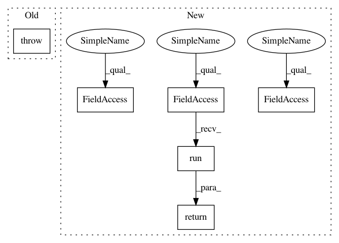

e2d3382bb4132ddb8aa586bf3c4c570be414f6af,tensorforce/models/policies/stochastic_policy.py,StochasticPolicy,sample,#StochasticPolicy#Any#,37
Before Change
self.random = random
def sample(self, state):
raise NotImplementedError
def get_distribution(self):
raise NotImplementedError
After Change
self.random = random
def sample(self, state):
fetches = list(self.policy_outputs)
fetches.extend(self.internal_state_outputs)
feed_dict = {self.state: (state,)}
if self.path_length is not None:
feed_dict[self.path_length] = (1,) + (0,) * 99
feed_dict.update({internal_state: self.internal_states[n] for n, internal_state in enumerate(self.internal_state_inputs)})
fetched = self.session.run(fetches=fetches, feed_dict=feed_dict)
sample = fetched[:len(self.policy_outputs)]
self.internal_states = fetched[len(self.policy_outputs):]
return sample
def get_distribution(self):
raise NotImplementedError
In pattern: SUPERPATTERN
Frequency: 3
Non-data size: 6
Instances
Project Name: reinforceio/tensorforce
Commit Name: e2d3382bb4132ddb8aa586bf3c4c570be414f6af
Time: 2017-03-26
Author: aok25@cl.cam.ac.uk
File Name: tensorforce/models/policies/stochastic_policy.py
Class Name: StochasticPolicy
Method Name: sample
Project Name: reinforceio/tensorforce
Commit Name: e2d3382bb4132ddb8aa586bf3c4c570be414f6af
Time: 2017-03-26
Author: aok25@cl.cam.ac.uk
File Name: tensorforce/models/policies/stochastic_policy.py
Class Name: StochasticPolicy
Method Name: sample
Project Name: IBM/adversarial-robustness-toolbox
Commit Name: 70e633a81a1eae82b7ad68285d4e9b4d26d4bf93
Time: 2019-01-21
Author: Maria-Irina.Nicolae@ibm.com
File Name: art/data_generators.py
Class Name: TFDataGenerator
Method Name: get_batch
Project Name: IBM/adversarial-robustness-toolbox
Commit Name: 3be6b6d054feb8cfdd6fdeee1df6d138e193aa3d
Time: 2019-01-28
Author: M.N.Tran@ibm.com
File Name: art/data_generators.py
Class Name: TFDataGenerator
Method Name: get_batch